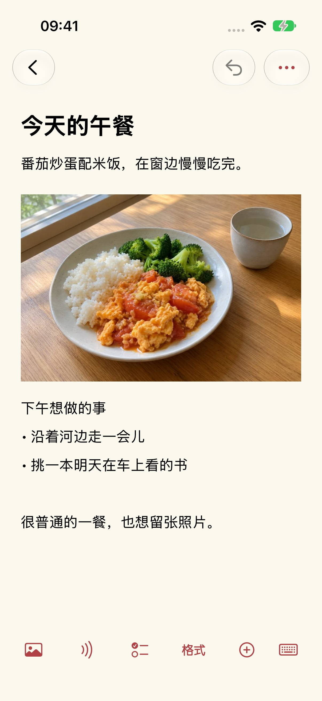

帮助与支持
更新日期：2026-10-29
为什么做莫问笔记
我一直想找一款简单、好用、完全免费的记录工具，找了很久，都没有遇到合适的。于是做了莫问笔记，也把它用在自己的日常里。
给每一天留出自己的位置
我希望每天打开它时，眼前是今天的生活。日历页按天显示记录，昨天的内容留在昨天，不会一直堆在今天。想回头看看时，再去翻日历，或沿着时间线慢慢回看。过去的记录仍然保留，每天也都有新的一页。



随手记下今天
今天吃了什么，拍张照片放进来；忽然想到想做的事，也随手记几句。文字、照片和录音都可以放在同一篇笔记里。
把行程放到对应日期
旅行前，把车次、座位号、车票截图和想去的地方放进对应日期。到了出发那天，打开当天的记录就能查看安排；几天的计划，也就顺着日历排好了。
日历和搜索，顺手就能找到
在当天列表顶部，下拉一次展开日历预览，再下拉一次打开快捷搜索。日历收起时，在顶部日期上左右滑动，就能切换到前一天或后一天。
选一种看着舒服的样子
可以选择不同主题色，使用亮色或暗色外观，也可以调整字号和行距。
开始记录
在笔记页选择新建，输入标题与正文。可从编辑器底部工具栏加入图片、录音、清单、表格和文件。
保存与备份
编辑会保存在本机。可在设置 → 资料管理 → 备份与迁移中导出普通或加密备份，也可从这里导入。请自行保管备份；当前版本不提供自动云同步。
录音转写不可用
录音保留在卡片中。转写需要语音识别权限和设备、语言支持；不支持时不会切换到云端识别。请在系统设置中检查麦克风与语音识别权限。
找回误删笔记
进入设置 → 资料管理 → 回收站恢复笔记。永久删除后，需要你此前导出的备份才能恢复。开发者没有笔记副本。
加密备份密码
密码不会保存在应用中。忘记密码时无法解开该加密备份；如果原设备上的笔记仍在，可以重新导出并使用新密码。
费用与账户
当前版本免费，无内购、订阅或广告，无需注册账户。